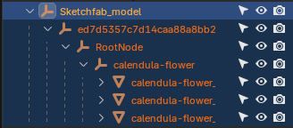
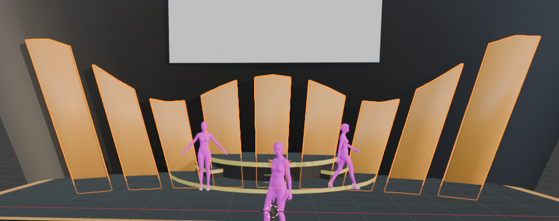

1. はじめに
- 【スケジュール】
-
- 11/18(火)：Blenderの基本操作、モデリング体験
- 12/2(火)：CIOとの連携、ダウンロードした素材の修正
- 12/16(火)、23(火)：各自制作
- 【講義資料】

-
- ページ下部に「上部へ戻る」と「ショートカット一覧」のボタンがあります。
- 【本日の内容】
-
- ダウンロード素材を使ったステージ作成


ダウンロードしたファイルをBlenderに読み込み、CLO用のサイズに整えます。
Sketchfab等の素材は「過剰な親子関係（素材が箱に入っている状態）」になっていることが多いため、まずは編集できる状態にします。

ひとつになった素材をさらに分解することも可能です。

分解した素材や、複数のオブジェクトをひとつにまとめることも可能です。
配列やミラーのモディファイアーを適応するためには、この手順が必要です。
ダウンロード素材は「色付き」で持っていくため、先ほどの手順（自作ステージ）とは設定を変える必要があります。

| 項目 | 設定内容 |
|---|---|
| フォーマット | glTF Binary (.glb) |
| 内容：対象 | 選択したオブジェクトにチェック |
| データ：メッシュ | モディファイアーを適用にチェック |
| アニメーション | チェックを外す |
| 項目 | 設定内容 |
|---|---|
| 読み込み形式 | Add |
| オブジェクトタイプ | Avatar |
| 単位 | m |
| 底面を地面に合せる | チェックを入れる |